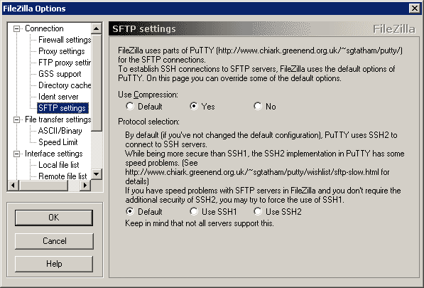

SFTP settings
Overview
On the SFTP page you can configure how FileZilla connects to SFTP servers.

| Use compression | - | To speed up SFTP transfers, all transfered data can be compressed. This feature is especially useful if you have a low bandwidth connection to the server. However not all servers support compression. Connection establishment may fail if connection to such servers with enabled compression. |
| Protocol selection | - | For increased security, FileZilla uses the SSH2 by default for SFTP connections. If your server does not support SSH2, you can try to force SSH1 connections. |